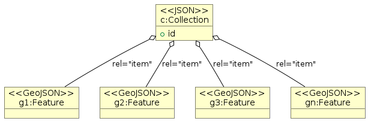
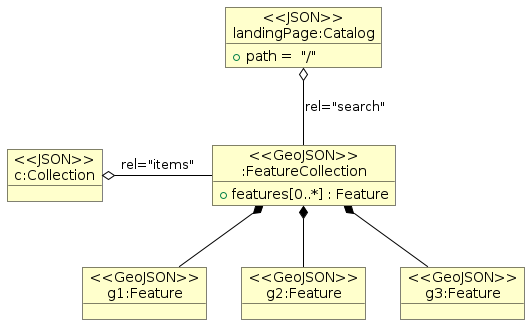

Previous | Table of contents | Next
4 Granule Catalog Best Practices#
4.1 Overview#
STAC implementations may provide granule metadata information as part of a static catalog (landing page with a hierarchy of collections and granules referenced with rel=”child” and rel=”item”), or via granule search interfaces and corresponding endpoints advertised as rel=”items” (in collection metadata) or rel=”search” (cross-collection granule search advertised in catalog landing page). The current chapter presents the requirements and recommendations that apply to STAC granule catalogs in addition to the general catalog requirements presented in Catalog Best Practices.
4.2 Static catalog without search interface#
EO granules represented as STAC items can be made available as:
individual STAC items referenced from a STAC collection (rel=”item”)
the result of a search interface request for the collection (rel=”items”)
the result of a cross-collection search interface request (rel=”search”)
 |
|---|
Method 1: Using rel=”item” |
 |
|---|
Method 2: Via search interfaces |
Both methods of publishing STAC granule metadata are valid, however, only STAC granule metadata made available via a search interface (either via rel=”items” or rel=”search” endpoints) can be easily federated with other catalogues without reingesting granule metadata in a federated catalogue for indexing. the recommendations provided in the current chapter recommend the provision of individual rel=”items” search endpoints for each individual collection to facilitate federation of catalogues.
4.3 Catalog with search interface#
4.3.1 Granule search request#
Endpoints#
CEOS-STAC-PER-4320 - Cross-collection granule search endpoint [Permission]
CEOS STAC granule catalogs may or may not advertise and provide a cross-collection endpoint for granule search, valid for all the collections in the STAC Catalog (typically the Landing Page) with rel=”search” and type=”application/geo+json” and may instead only provide individual granule search endpoints per collection via rel=”items” in the collection representation.
The above permission avoids the implementation of multiple endpoints for granule search since a single implementation is sufficient. CEOS STAC catalog clients should not assume the existence of the cross-collection granule search endpoint.
Note that the provision of a cross-collection granule search endpoint itself is not required. If it is provided, then GET should be supported. Support of the POST method at the cross-collection granule search endpoint (if available) is not required.
Search parameters#
CEOS-STAC-REQ-4340 - Supported granule search parameters [Requirement]
The STAC-API and OGC API-Features specifications define a list of fundamental search parameters. From these specifications, a CEOS STAC granule catalog shall support the following minimum set of search parameters for “granule” search at the rel=”items” endpoint:
limitbboxdatetime
CEOS-STAC-REQ-4350 - Additional granule search queryables [Requirement]
A CEOS STAC granule catalog supporting additional queryables for a collection shall return the link to the Queryables object with the list of queryables that can be used in a filter expression for that collection via a link object in the collection representation (metadata) with rel=”http://www.opengis.net/def/rel/ogc/1.0/queryables” and type=”application/schema+json” (typically, but not necessarily, at ‘/collections/{collectionId}/queryables’).
4.3.2 Granule search response#
CEOS-STAC-REQ-4630 - Item search response representation [Requirement]
A granule search response shall be represented as a GeoJSON FeatureCollection according to version v1.0.0 of the “STAC API ItemCollection Specification”.
CEOS-STAC-REQ-4635 - Item search numberMatched [Requirement]
Granule search responses shall use the properties
$.numberMatchedand$.numberReturnedas per version v1.0.0 of the “STAC API ItemCollection Specification” instead of using the deprecated “STAC API - Context Extension Specification” to communicate the number of results.
CEOS-STAC-REQ-4645 - Item search response representation [Requirement]
Granules included in a granule search response shall be conformant with “CEOS STAC Granule Metadata Best Practices”.